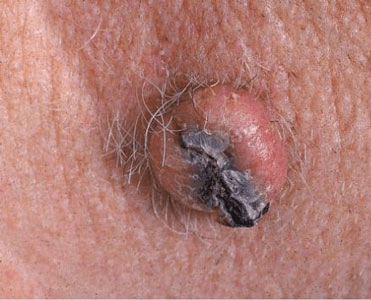
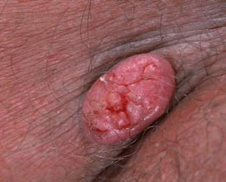

Keratoacanthoma (KA) is a low-grade, or slow-growing, skin cancer tumor that looks
like a tiny dome or crater. KA is benign despite its similarities to squamous cell
carcinoma (SCC), or the abnormal growth of cancerous cells on the skin’s most outer
layer. KA originates in the skin’s hair follicles and rarely spreads to other cells.
KA is commonly found on sun-exposed skin, such as skin on the:


KA will go away on its own, but this can take many months. Your doctor may recommend surgery or medication to remove KA.
Treatment options depend on the location of the lesion, the patient’s health history,
and the size of the lesion. The most common treatment is a minor surgery, under a
local anesthetic, to remove the tumor. This may require stitches, depending on the
size of the KA.
Other treatments include:
Medications are used if you aren’t considered a good candidate for surgery.
Doctors can prescribe drugs for people who have numerous lesions.
The medical treatments include:
Home care involves treating the site of the tumor after it’s removed to help
the skin in the area heal. Your doctor will provide you with specific instructions,
including to keep the area dry and covered while it heals.
The treatment doesn’t stop completely after the lesion is removed. Once you’ve had KA,
it’s common for it to reoccur, so you’ll want to regularly go to follow-up appointments
with your dermatologist or primary care physician. Maintaining healthy habits to protect
your skin from the sun can help prevent reoccurring lesions.